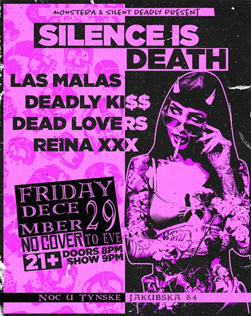
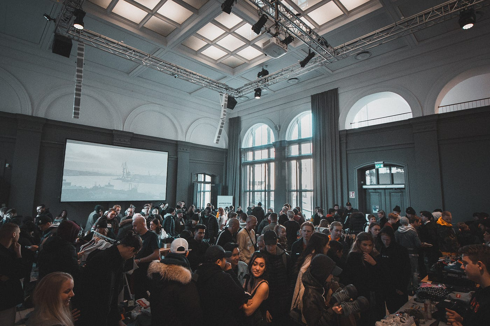

L'Evento del Decennio
Punk Rock al Noc u Tynske

Ancora una volta Tynske Masarik, proprietario del locale notturno più in
vista della città di Praga, stupisce tutti con il suo "Silence is Death",
evento musicale ambizioso e dal nome tagliente che vedrà l'alternarsi
non-stop di band musicali provenienti da tutto il mondo.
Inutile dire che oltre agli incredibili introiti economici, l'evento
porterà il turismo musicale ad un livello mai visto prima d'ora.
C'è solo da domandarsi quale sia la sospresa finale annunciata che tutti
si aspettano di scoprire allo scoccare della mezzanotte del 31 dicembre.
Per tutti coloro che desiderano scoprirlo, il magnate dell'intrattenimento praghese vi aspetta a partire dalle 20:00 in Jakubska 84; è consigliato fare scorta di caffeina.
Technické a odborné
Každý má právo na vzdělání. Vzdělání nechť je bezplatné, alespoň v počátečních
a základních stupních. Základní vzdělání je povinné. Technické a odborné vzdělán
budiž všeobecně přístupné a rovněž vyšší vzdělání má být stejně přístupné všem podle schopností.
Vzdělání má směřovat k plnému rozvoji lidské osobnosti a k posílení úcty k lidským právům a
základním svobodám.
Má napomáhat k vzájemnému porozumění, snášenlivosti a přátelství mezi
všemi národy a všemi skupinami rasovými i náboženskými, jakož i k rozvoji činnosti Spojených
národů pro zachování míru. Rodiče mají přednostní právo volit druh vzdělání pro své děti.
Rodiče mají přednostní právo
Každý má právo na vzdělání. Vzdělání nechť je bezplatné, alespoň v počátečních
a základních stupních. Základní vzdělání je povinné. Technické a odborné vzdělán
budiž všeobecně přístupné a rovněž vyšší vzdělání má být stejně přístupné všem podle schopností.
Vzdělání má směřovat k plnému rozvoji lidské osobnosti a k posílení úcty k lidským právům a
základním svobodám.
Má napomáhat k vzájemnému porozumění, snášenlivosti a přátelství mezi
všemi národy a všemi skupinami rasovými i náboženskými, jakož i k rozvoji činnosti Spojených
národů pro zachování míru. Rodiče mají přednostní právo volit druh vzdělání pro své děti.
